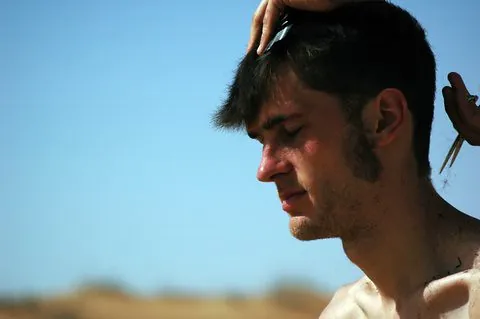
Corte a medida
Estudio de forma y textura pensado para tu rostro y tu día a día.
desde 28€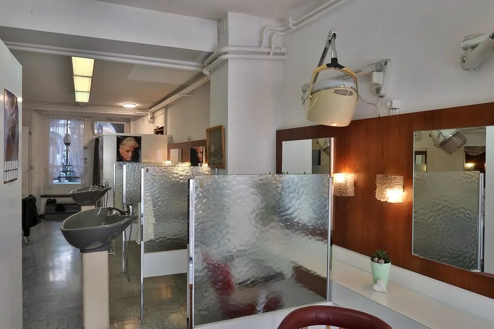
Estudio de peluquería · Madrid
Cortes, color y tratamientos pensados para tu pelo real, no para una foto de referencia.
En Ondas creemos que un buen corte empieza por escuchar. Diagnosticamos tu tipo de pelo, hablamos de rutina y de tiempo real antes de tocar unas tijeras. El resultado: un peinado que sigues sabiendo llevar tú sola al día siguiente.
Lo que hacemos

Estudio de forma y textura pensado para tu rostro y tu día a día.
desde 28€Balayage, mechas y matices con productos de baja agresión.
desde 55€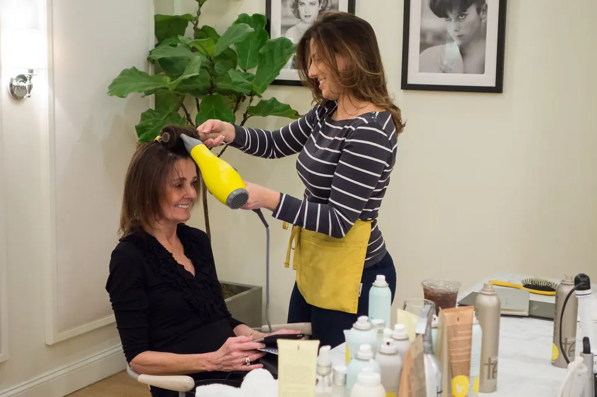
Brushing, ondas y acabados de salón para cualquier ocasión.
desde 22€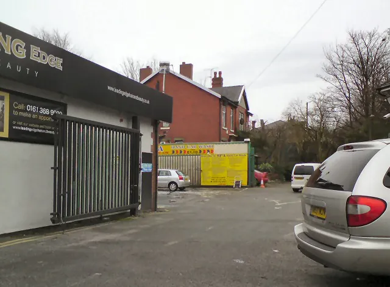
Rituales de hidratación, reconstrucción y brillo con diagnóstico previo.
desde 35€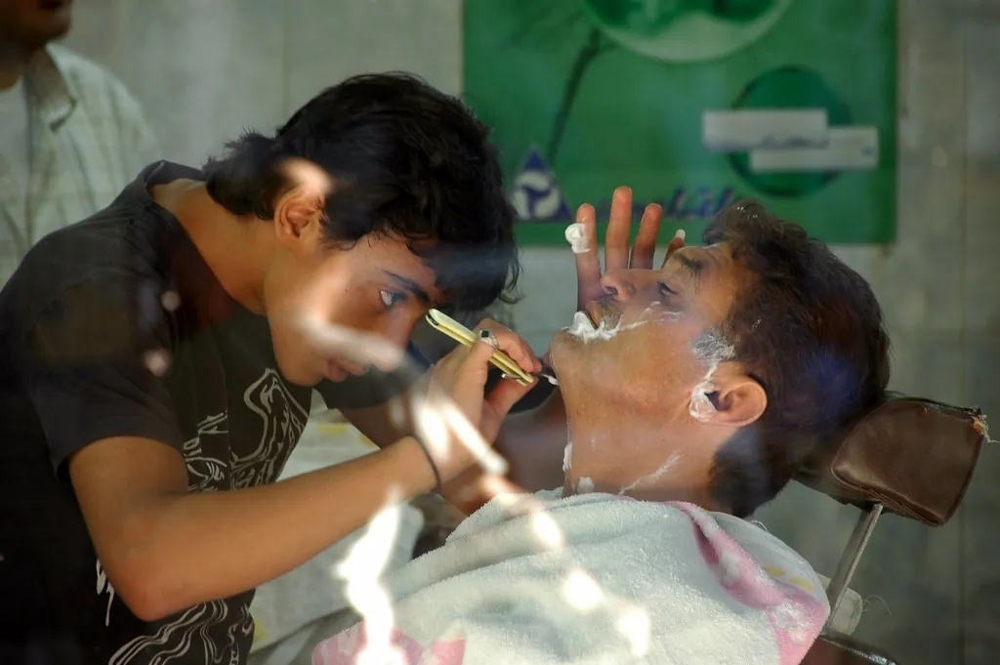
Corte, arreglo de barba y afeitado clásico con navaja caliente.
desde 24€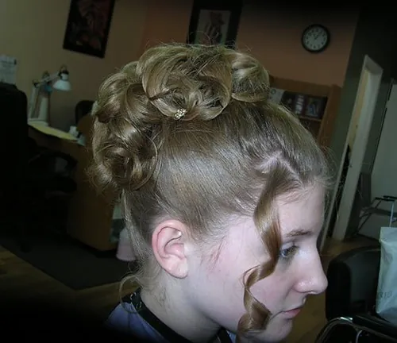
Recogidos y peinados de invitada con prueba previa incluida.
desde 65€Trabajos recientes
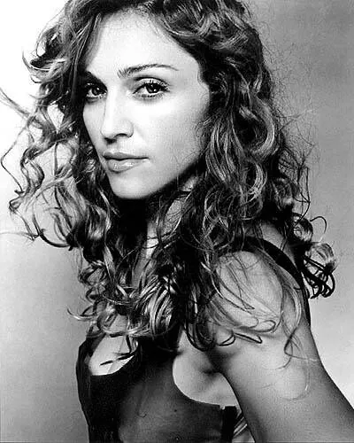
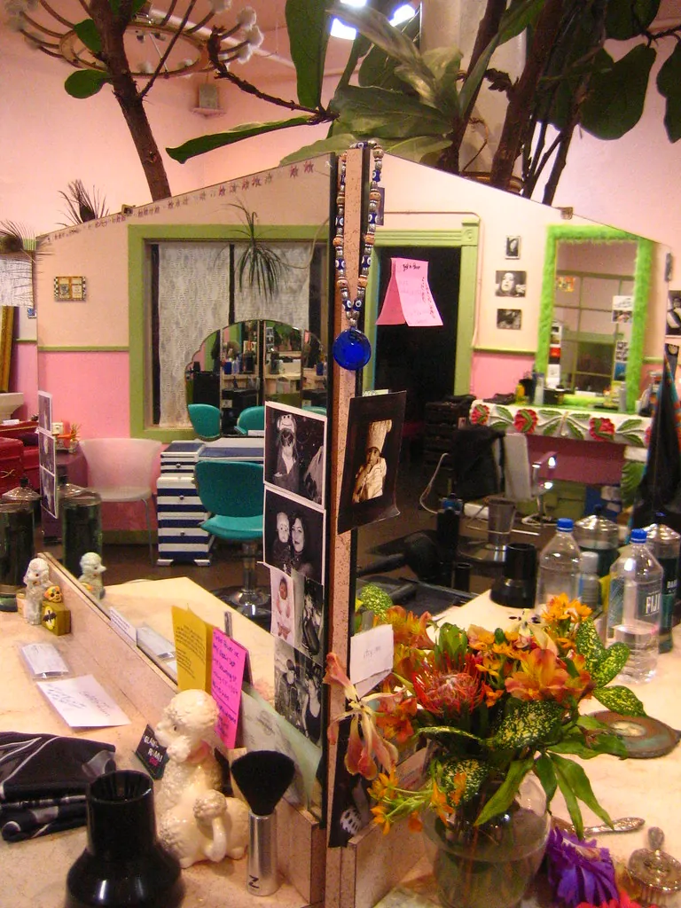
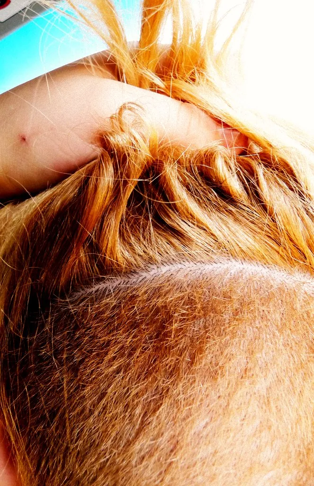
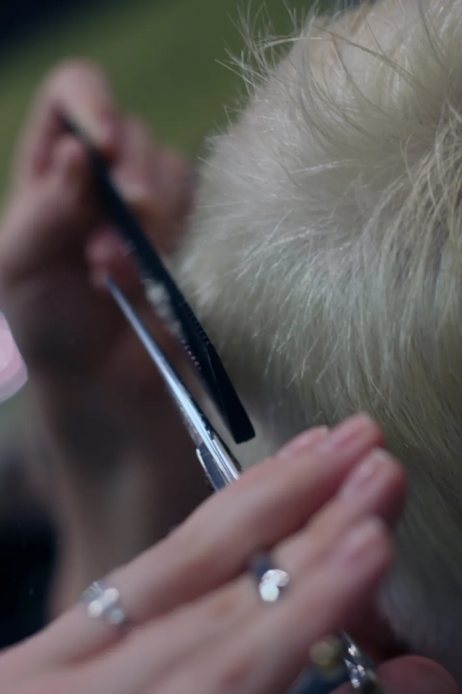
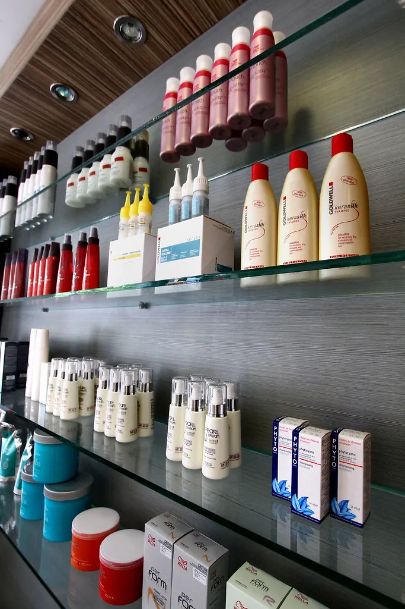
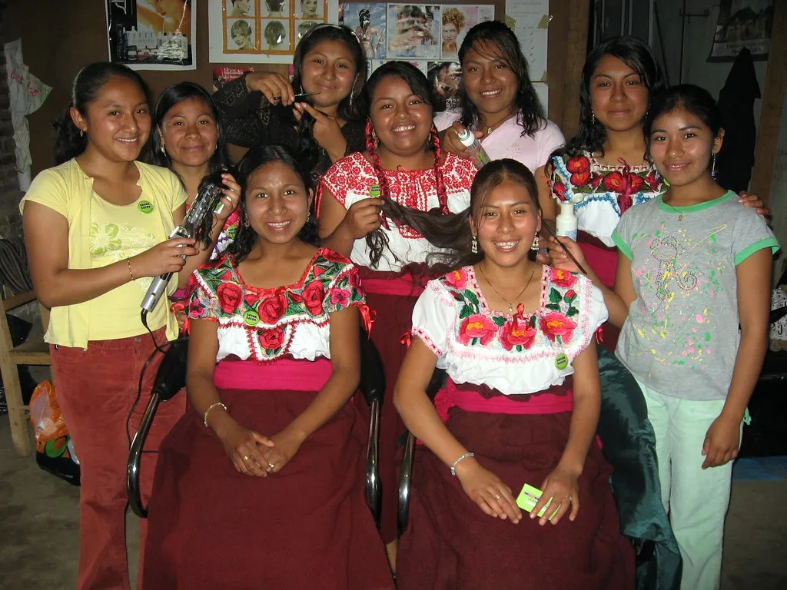
Quiénes somos
Ondas nació en 2016 como un estudio pequeño con dos sillones y una idea clara: cuidar el pelo real de la gente, no perseguir tendencias que duran una temporada. Hoy somos un equipo de seis profesionales formados en corte, color y tratamientos, y seguimos trabajando con cita individual — sin prisas, sin dos clientas a la vez.
Lo que dicen
“Entré con una idea vaga y salí con el corte que llevo pidiendo en fotos desde hace años. Escuchan de verdad.”
“El balayage que me hicieron aguantó perfecto seis meses. Es la primera vez que un color no se me estropea tan rápido.”
“Ambiente tranquilo, nada de prisas. Se nota que cuidan cada detalle, desde el lavado hasta el peinado final.”
Cuándo visitarnos
Trabajamos solo con cita previa para poder dedicarte el tiempo que tu pelo necesita.
| Lunes | Cerrado |
|---|---|
| Martes – Viernes | 10:00 – 20:00 |
| Sábado | 10:00 – 18:00 |
| Domingo | Cerrado |
Reserva tu cita
Cuéntanos qué buscas y te confirmamos hueco en menos de 24 horas.